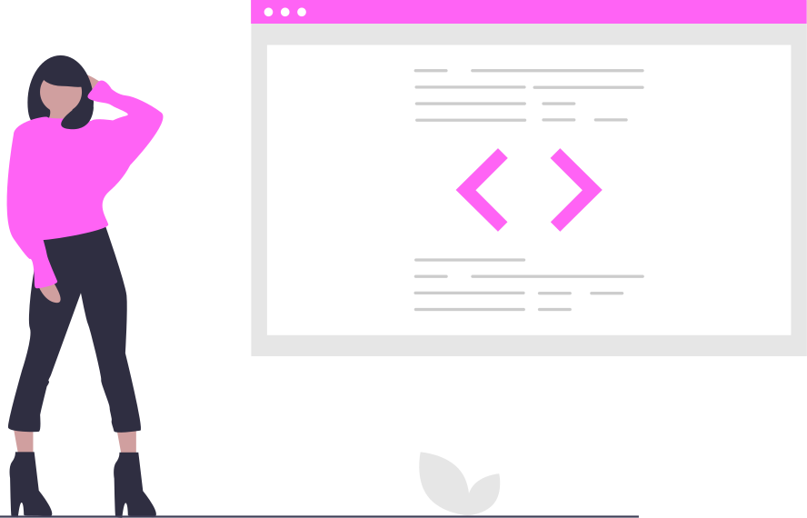
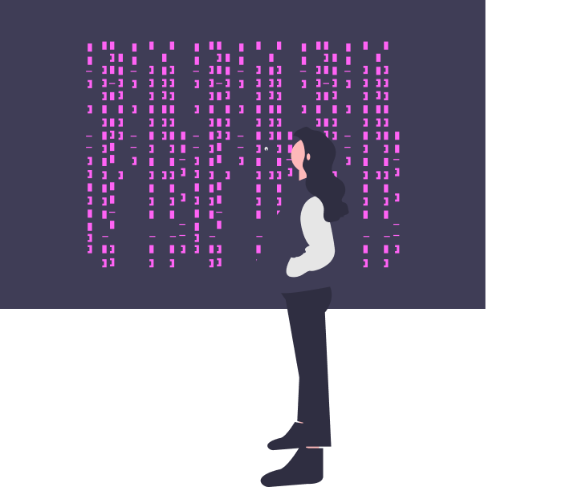

Cavalcante Who?
A software developertimelady.
Giovanna Cavalcante
Hi, I'm Giovanna, a software engineer who is passionate about coding and creating. I enjoy creating visually pleasing and accessible web applications. Based in Sorocaba, I got into Fatec at Análise e Desenvolvimento de Sistemas course in 2015. Recently, I took a Web Development course at University of Johns Hopkins. I am always trying something new to achieve my goals. I code, in order to emerge from the simple solutions to bring new ones with criativity and especially: share experiences and knowledge.

“When we see “internet of things”, let’s make it an internet of beings. When we see “virtual reality”, let’s make it a shared reality. When we see “machine learning”, let’s make it collaborative learning. When we see “user experience”, let’s make it about human experience. When we hear “the singularity is near”, let us remember: the Plurality is here.”
 - Audrey Tang, Digital Minister of Taiwan.Find me around the web
In this section you can find my updates and sharing content at: